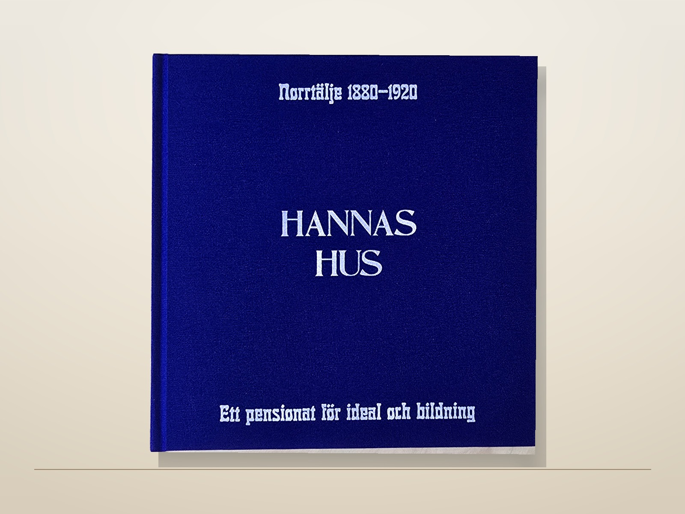
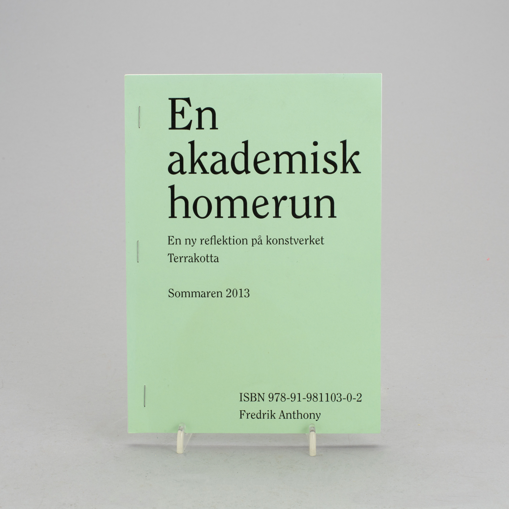
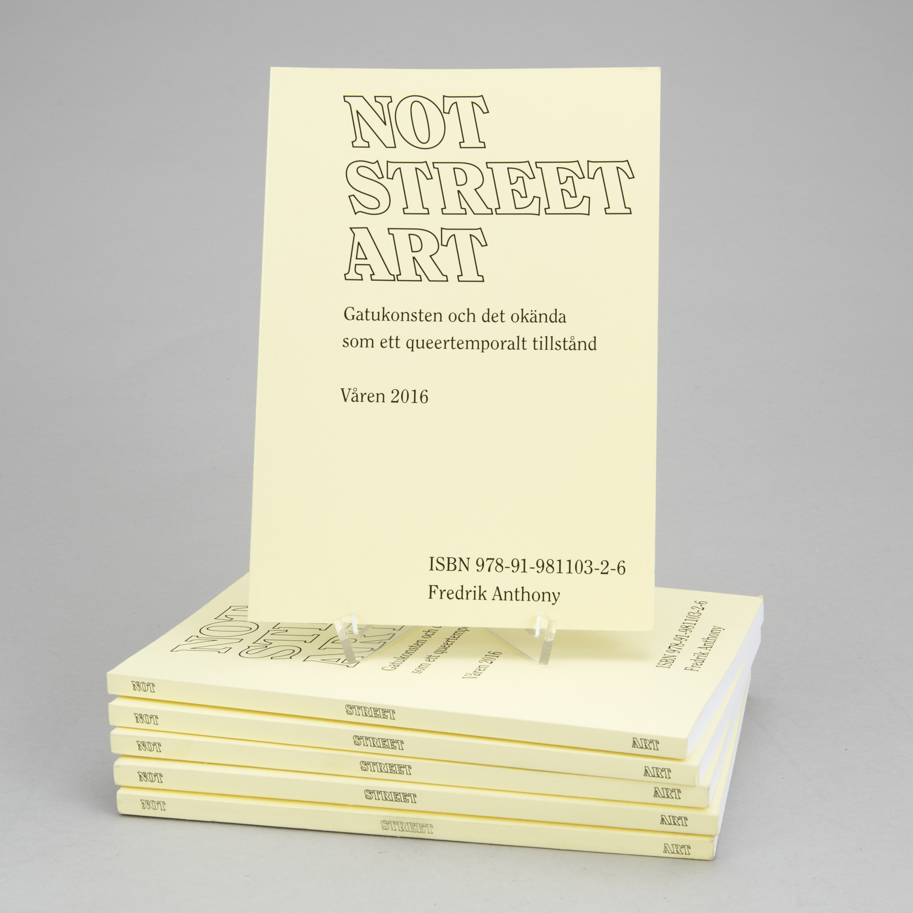
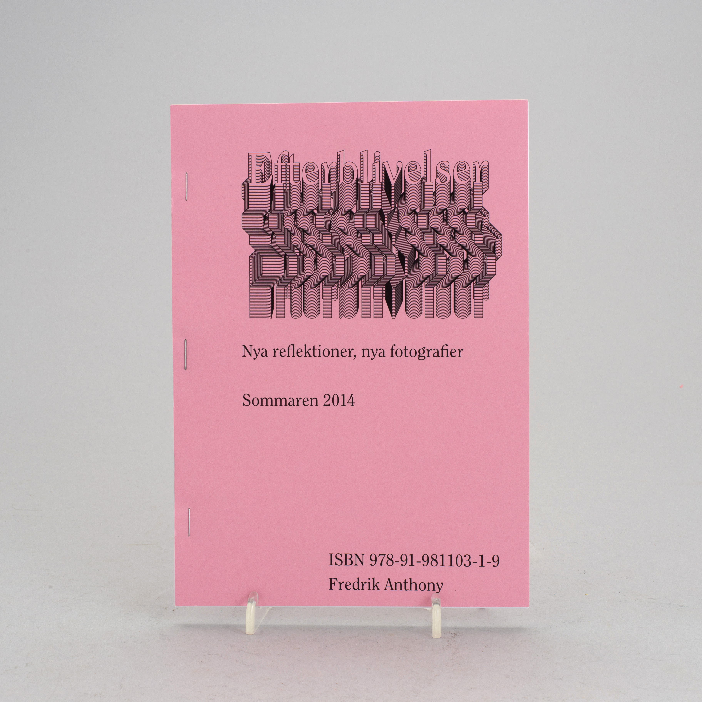

Bokförlaget Örnflycht
Historia, platser och människor
Ett litet förlag för böcker och pamfletter som samlar arkiv, lokala berättelser och personliga spår i tryckt form.
Aktuellt
Våra böcker
Här samlas förlagets utgivning. Titlarna nedan är upplagda som böcker och pamfletter att beställa eller läsa mer om.

En akademisk homerun
En ny reflektion på konstverket Terrakotta
Sommar 2013. 14 sidor. Upplaga: 100.
Beställ
Not Street Art
Gatukonsten och det okända som ett queertemporalt tillstånd
Våren 2016. 141 sidor. Upplaga: 200.
Beställ
Första titel
Hannas hus
Hannas hus är berättelsen om Johanna "Hanna" Charlotta Lindh, kvinnan bakom Pensionat Granparken och en ovanlig livsväg genom arbete, bildning och socialt engagemang.
Boken följer Hanna från Småland till Norrtäljes badortsliv, Frälsningsarméns verksamhet och ett pensionat som blev familjehem, mötesplats och scen för nya idéer.
Pamflett
En akademisk homerun
En akademisk homerun is a performative interpretation of the artwork Terracotta created by Marianne and Sivert Lindblom, a landscape-based artwork at Stockholm University.
Based on the themes of construction, memory, representation and identity, this paper examines how national, political and artistic attitudes have influenced Terracotta. This paper has reservations regarding previous research performed by Nina Weibull and Inga-Maj Beck.
Bok
Not Street Art
Not Street Art tar sin utgångspunkt i hur gatukonstens utveckling ofta skrivs fram kronologiskt och geografiskt för att skapa historisk kontext. Boken frågar vad som händer om förståelsen av gatukonst inte organiseras efter land och stad.
I stället prövas konstformen utifrån det okända: som ett icke-rumsligt fenomen, inte kronologiskt och inte historiserat.
Distribution enligt Cargo: Guerilla: Moderna Museet, Stockholm; Nationalmuseum; Kulturhuset; Mångkulturellt centrum, Botkyrka; PaperCut med flera.
Pamflett
Efterblivelser
Efterblivelser har undertiteln Nya reflektioner, nya fotografier. Texten lanserar ett begrepp för den estetik som skapas av resterna som lämnas kvar i en auktionsmiljö.
Miljön kopplas till en konstvärld som förhärligar och dikterar konstnärliga värden. Resterna uppstår genom objekt utan prislapp eller upphovsperson, träder fram genom det ofullkomliga och öppnar för reflektion.
Kategorier
Växande hyllor
När utgivningen växer kan titlarna sorteras efter ämne, format och serie.
Historia
Böcker om personer, miljöer och idéer i historiskt ljus.
Pamfletter
Kortare texter, särtryck och dokumentära sidoprojekt.
Platser
Utgivning med hus, gårdar, arkiv och lokala minnen som utgångspunkt.
Förlaget
Om Bokförlaget Örnflycht
Örnflycht är en förlagsram för små, omsorgsfulla utgivningar där research, bildmaterial och berättande får ta plats. Förlaget gör det möjligt att presentera flera framtida titlar under samma avsändare.
För närvarande är utgivningen fokuserad på egna projekt. Manus och samarbeten hanteras selektivt när de passar förlagets inriktning.